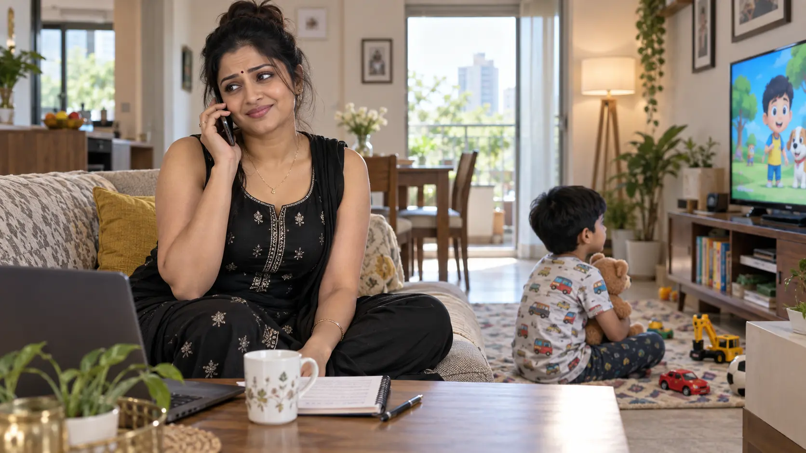
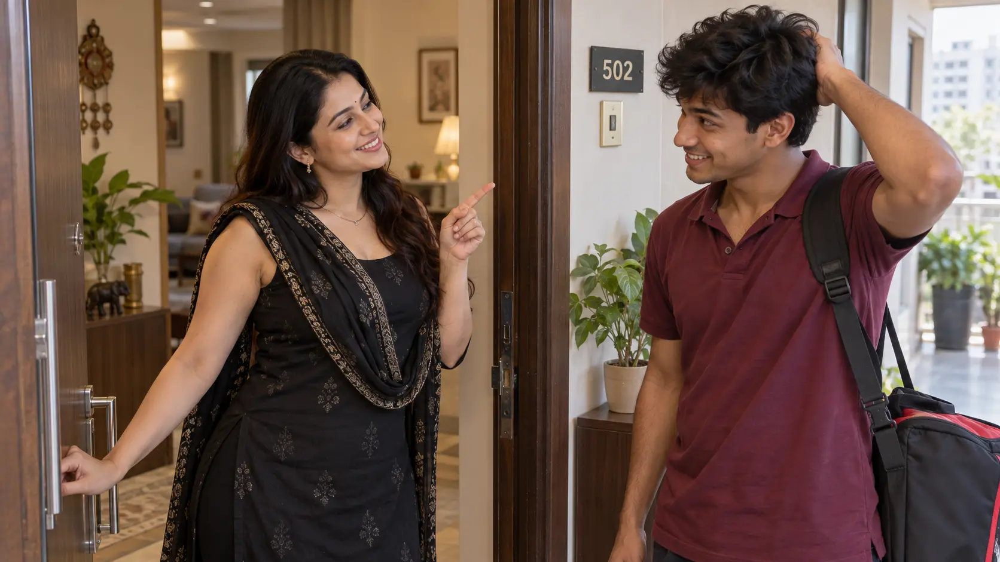
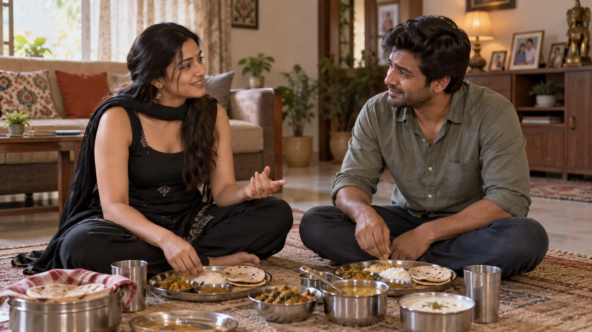

L171–174
Morning and the unpaid moneyJohn is still away; Dhika stays home with Pappu and remembers Maami's payment.

GENERATED_PENDING_REVIEW · black home outfit · L171–174
Sequence: next morning → Chotu returns → invitation → shared lunch · L171–194.
John is still away; Dhika stays home with Pappu and remembers Maami's payment.

Dhika has added her dupatta and warmly teases him before offering lunch.

She joins him on the floor; family talk and food deepen ordinary trust.

Haan—payment ke liye, phir boredom aur hospitality mein baat/food ka plan.
Nahi. L174 mein good dupatta pehenne ka decision hai.
Maa ka kaam yaad aane ka jhooth.
Source mein politeness aur uski table refusal ka practical result hai.
Dhika: practical mother/wife, bored host, consciously modest, generous with food.
Chotu: evasive about yesterday, time-conscious, polite, and moved by equal treatment.
| Pair | Part 10 delta |
|---|---|
| Dhika ↔ Chotu | First meal together; he feels moved by her sitting with him. |
| Dhika ↔ John | Playful call; she uses his uneaten portion rather than framing his absence as rejection. |
| Range | Visibility state |
|---|---|
| L173 | Home-only black sleeveless low-cut salwar, no Chotu present. |
| L174–194 | Good dupatta worn for Chotu; ordinary shared meal. |
Entry, meal and floor seating are each explicit choices. None imply permission beyond ordinary hospitality.
The reader knows Chotu's explanation is a lie. Dhika does not challenge it.
The key escalation is access and duration: Chotu stays, eats and talks rather than making a brief payment visit.
Keep the typo “10 PM” unchanged in Original; treat it as source text, not silently corrected canon.
| Hook | Status |
|---|---|
| Will Chotu return? | RESOLVED. |
| Will yesterday be discussed? | NO; he lies and she accepts it. |
| Will outfit be noticed? | OPEN into Part 11. |
Wardrobe: black sleeveless low-cut salwar plus good dupatta.
Object continuity: lunch finished, dishes at kitchen sink, payment available.
Emotional ceiling: warmth/gratitude only through L194.
Next boundary: L195 dress notice.